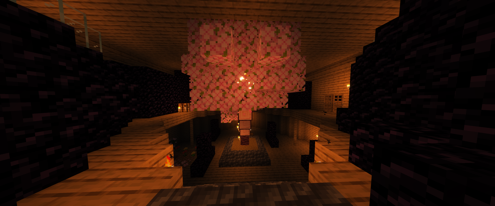
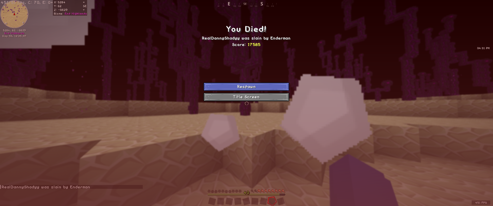
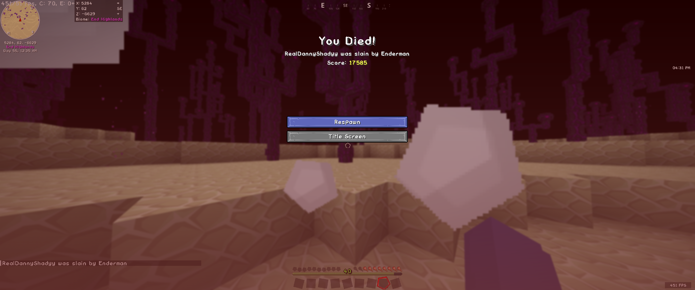

Über unseren Minecraft Server:
Der Minecraft-Server, den wir betreiben, ist ein Gemeinschaftsprojekt, das wir ins Leben gerufen haben, um gemeinsam unsere Zeit zu vertreiben und Spaß zu haben. Jeder von uns hat sein eigenes individuell gestaltetes Haus, doch trotzdem spielen wir gemeinsam und interagieren miteinander. Es ist faszinierend zu sehen, wie jede Person ihre Kreativität und Vorlieben in ihrem Haus zum Ausdruck bringt. Chris und Max haben beispielsweise innovative automatische Türsysteme in ihren Häusern integriert, was jedem den Eintritt zu ihren beeindruckenden Gebäuden erleichtert. Linus hat einen eindrucksvollen Gemeinschaftsbaum gestaltet, der als zentraler Knotenpunkt dient und mit einer gut durchdachten Minecraft-Strecke zu allen anderen Häusern führt. Diese Idee fördert die Zusammengehörigkeit und ermöglicht uns allen, leichter miteinander zu interagieren. Im Keller von Danny befindet sich eine beeindruckende Handelsstätte für Dorfbewohner und ein umfangreiches Lagersystem, das sowohl funktional als auch ästhetisch ansprechend ist. Die Vielfalt an Möglichkeiten, die jedem von uns geboten wird, macht das gemeinsame Spielen auf unserem Server so abwechslungsreich und spannend. Yannis und Luca haben in unmittelbarer Nähe zu ihren Häusern eine effiziente Eisenfarm eingerichtet, die für alle auf dem Server zugänglich ist. Diese großzügige Geste stärkt die Gemeinschaft und ermöglicht es jedem, Ressourcen zu nutzen, um seine eigenen Projekte voranzutreiben. Es ist inspirierend zu sehen, wie wir alle zusammenarbeiten und voneinander lernen, während wir unsere individuellen Erfahrungen im Minecraft-Universum teilen.
Bildergalerie:



 



Spielerprofile:
Danny - RealDannyShady
Danny, alias "RealDannyShady", beeindruckt auf unserem Server mit einem architektonischen Meisterwerk, das nicht nur ein beeindruckendes Haus, sondern auch eine Handelsstätte für Dorfbewohner im Keller beherbergt. Als erfahrener Spieler teilt er sein Wissen und seine Baufertigkeiten mit der Gemeinschaft, was ihn zu einer inspirierenden Persönlichkeit macht.
Linus - Lin0s
Linus, auch als "LI0ns" bekannt, ist der Gemeinschaftsstratege mit einem beeindruckenden Gemeinschaftsbaum. Seine klugen strategischen Entscheidungen fördern die Zusammengehörigkeit und bereichern das gemeinsame Spielerlebnis.
Max - MaxDerEchte
Max, alias "MaxDerEchte", beeindruckt auf unserem Server mit innovativen automatischen Türsystemen und Redstone-Konstruktionen. Seine kreativen Fähigkeiten bereichern den Server durch technologische Herausforderungen.
Chris - CH1ris
Chris, aka "CH1ris", ist der abenteuerlustige Entdecker, der ständig nach neuen Gebieten und Geheimnissen sucht. Seine Expeditionen bringen frischen Wind in die Spielwelt, und er sammelt seltene Ressourcen für die Gemeinschaft.
Luca - Lukkaa
Luca, aka "Lukkaa", gestaltet organische Bauprojekte, die harmonisch in die Umgebung integriert sind. Sein zentraler Gemeinschaftsbaum dient als Knotenpunkt für alle Spieler, und seine Architektur zeugt von seiner Liebe zur Natur.
Yannis - Yanno08
Yannis, auch bekannt als "Yanno08", hat sich als Ressourcenmeister auf dem Server etabliert. Seine effiziente Eisenfarm steht allen Spielern zur Verfügung, und er teilt großzügig seine Ressourcen, um die Gemeinschaft zu stärken.
Verbindungsinformationen:
Serveradresse, Portinformationen und Anleitungen zur Verwendung von Mods oder Texture Packs.